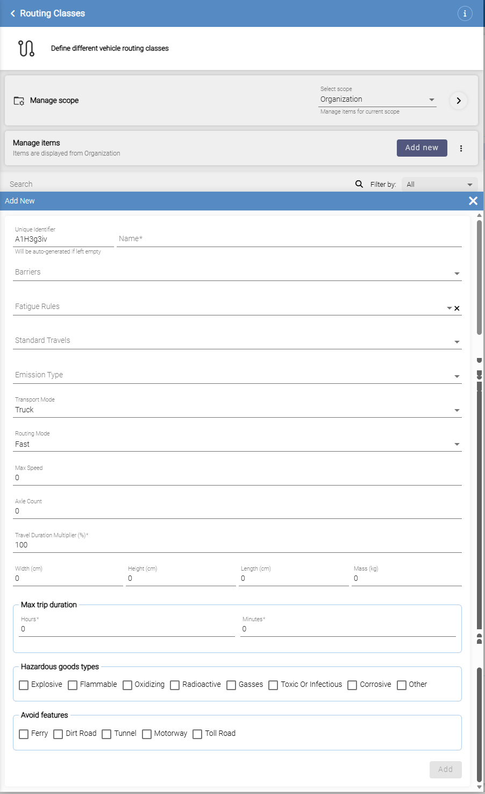
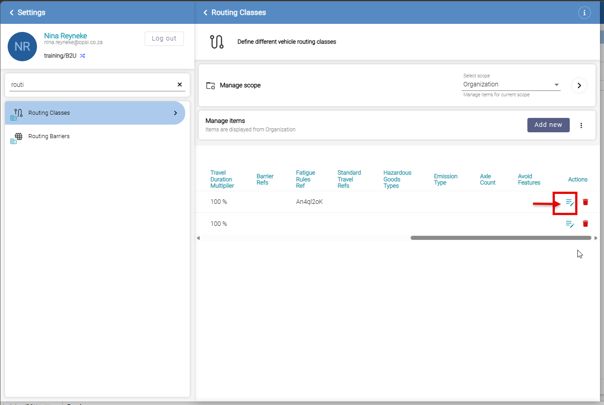
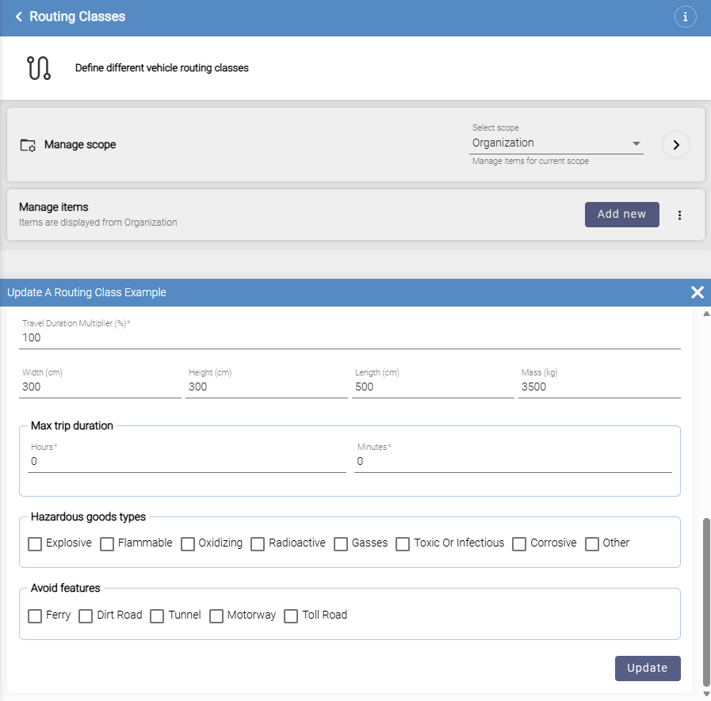
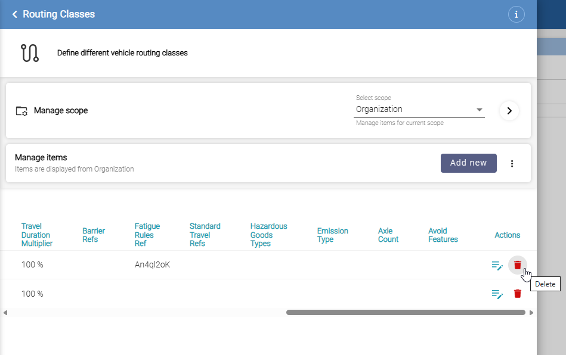
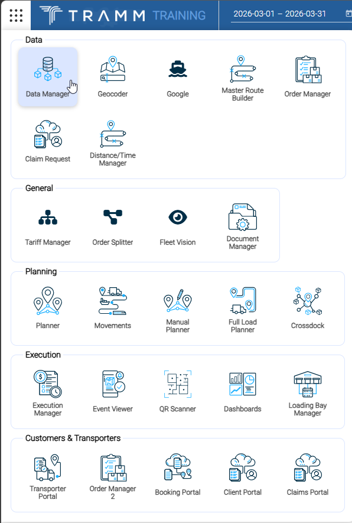
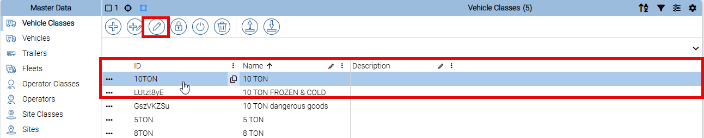
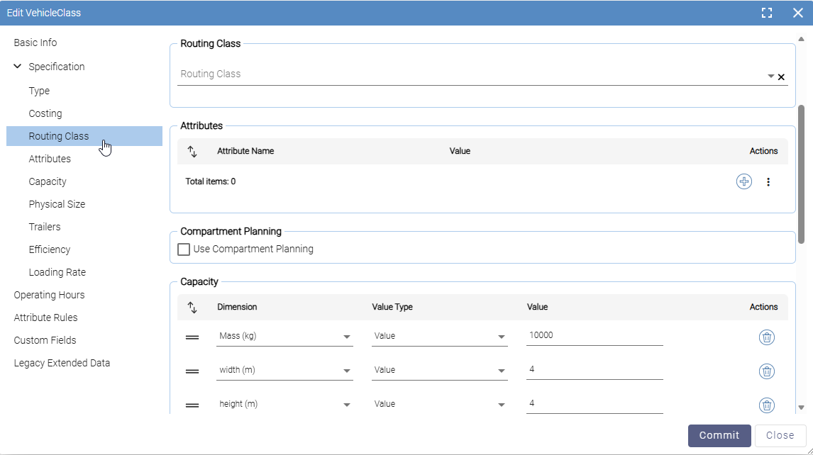
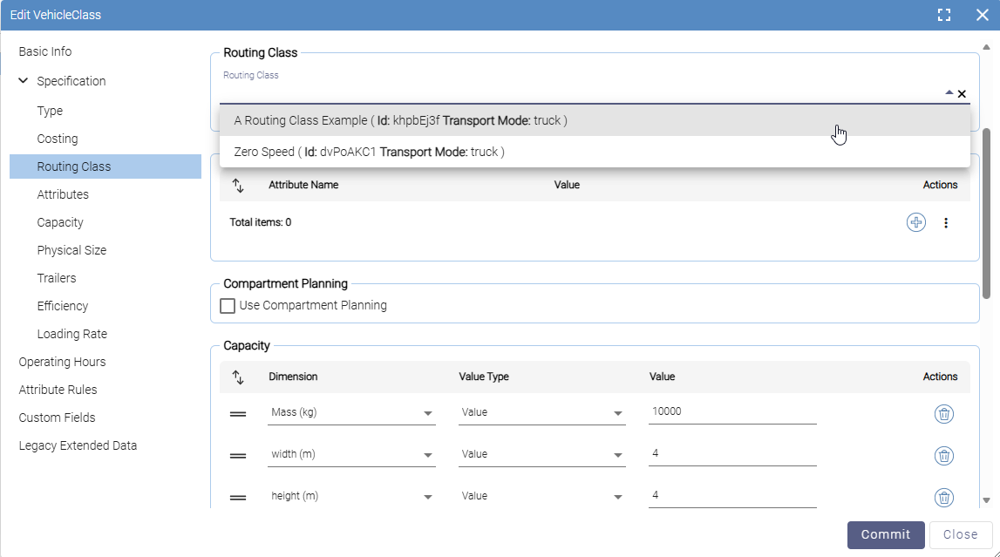
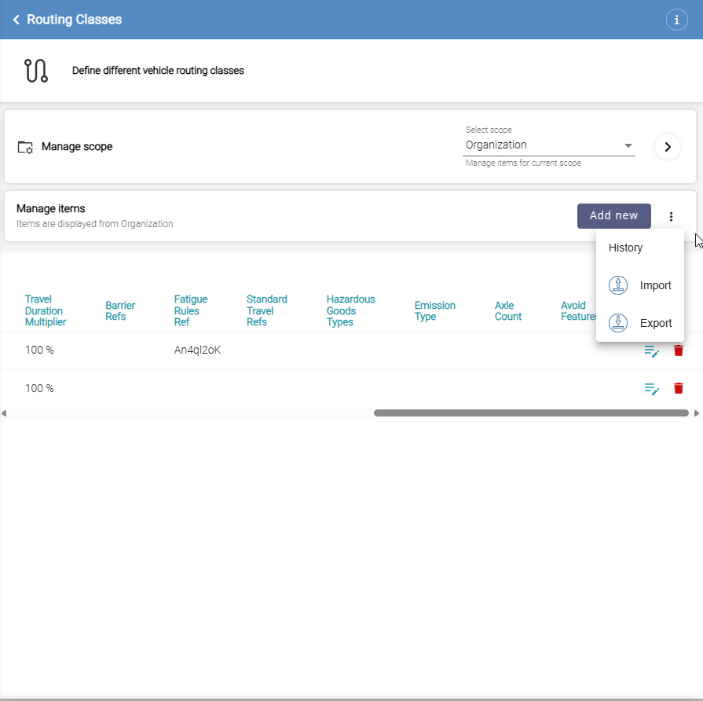

1. What is a Routing Class?
A Routing Class is a reusable configuration profile that describes how a specific type of vehicle should be routed. It captures the vehicle's physical dimensions, transport category, speed constraints, cargo restrictions, and any pre-defined routing overrides.
When a trip is calculated, Tramm looks up the Routing Class assigned to the trip's Vehicle Class and passes its parameters to the routing engine (HERE Maps). The routing engine then computes distances and travel times that are appropriate for that vehicle type.
Key principle: Routing Classes are defined once in Settings and then referenced by Vehicle Classes. Updating a Routing Class automatically affects all trips that use Vehicle Classes linked to it.
2. Where Routing Classes are Used
| Context | How it is used |
|---|---|
| Vehicle Class | Each Vehicle Class has a Routing Class field. The Routing Class defines how vehicles of that class are routed. |
| Trip Calculation | When a trip is (re-)calculated, the system resolves: Trip → Vehicle Class → Routing Class → routing parameters sent to HERE Maps. |
| Toll Calculation | The same Routing Class parameters are used when calculating toll costs for a trip. |
4. Creating a Routing Class
-
Click Add new On the Routing Classes screen, click the Add new button (top right of the items table). An Add New panel slides open.
-
Set an Identifier and Name
- Unique Identifier – Optional. Can be left blank; the system will auto-generate one. Maximum 70 characters. Must be unique across all Routing Classes.
- Name – Required. A descriptive label (e.g. Standard Truck, Hazmat Tanker). Must be unique.
-
Select linked Barriers, Fatigue Rules, and Standard Travels Use the dropdown lists to attach template items. These are optional — leave them blank if not applicable. See the Field Reference for details on each.
-
Select an Emission Type Choose from the dropdown (euro1–euro6) if this vehicle class requires emission-aware routing. Leave blank if not applicable.
-
Select Transport Mode Choose Truck or Car. This determines the road network and constraints used by the routing engine, and controls whether physical dimensions are required.
When Truck is selected, the Width, Height, Length, and Mass fields are enabled. When Car is selected, those fields are disabled.
-
Select Routing Mode Choose Fast (optimise for shortest travel time) or Short (optimise for shortest distance).
-
Enter Max Speed and Axle Count Set a speed cap in km/h (leave as 0 for no cap). Enter the number of axles if relevant for road restrictions or toll calculations.
-
Set the Travel Duration Multiplier This field is required and defaults to 100 (meaning 100% — no adjustment). Enter a higher value to add a buffer to all travel time calculations for this vehicle type (e.g. 120 = 20% longer than the routing engine baseline).
-
Enter physical dimensions (Truck mode) Fill in Width, Height, and Length in centimetres, and Mass in kilograms. These prevent the routing engine from selecting roads or structures the vehicle cannot use.
-
Set Max Trip Duration Enter the maximum allowable trip duration using the Hours and Minutes fields. Leave at 0 for no limit.
-
Select Hazardous Goods Types and Avoid Features Tick any checkboxes that apply to this vehicle type. The routing engine will avoid roads and areas that prohibit the selected hazards or features.
-
Click Add Click the Add button at the bottom of the panel to save the new Routing Class. It will appear in the table immediately.

5. Field Reference
Fields appear in the form in the order listed below.
Identity
| Field | Required | Notes |
|---|---|---|
| Unique Identifier | Optional | Auto-generated if left blank. Max 70 characters. Must be unique. |
| Name | Required | Display name. Must be unique across all Routing Classes. |
Linked Routing Entities
| Field | Type | Notes |
|---|---|---|
| Barriers | Multi-select dropdown | Attach one or more Routing Barrier templates. Barriers define geographic areas that vehicles of this class must avoid. Only barriers flagged as templates appear in this list. |
| Fatigue Rules | Single-select dropdown | Select the Fatigue Rule set applicable to drivers operating this vehicle class. Click the X icon next to the field to clear the selection. |
| Standard Travels | Multi-select dropdown | Attach one or more Standard Travel templates. A Standard Travel defines a pre-approved site-to-site route with fixed distance and duration, overriding the routing engine result for that pair. Only Standard Travels flagged as templates appear in this list. |
Template vs. non-template: Barriers and Standard Travels that are not marked as templates apply to all trips regardless of Routing Class. Template items only apply when a Routing Class explicitly references them.
Emission Type
| Value | Notes |
|---|---|
euro1 – euro6 |
Enables emission-aware routing. Leave blank if not applicable. When set, the system requests a full route shape from HERE Maps to support emission zone avoidance. |
Transport & Routing Mode
| Field | Options | Notes |
|---|---|---|
| Transport Mode | Car | Truck |
Determines the road network and constraints used. Selecting Truck enables the physical dimension fields; selecting Car disables them. |
| Routing Mode | Fast | Short |
Fast optimises for shortest travel time. Short optimises for shortest distance. |
Speed & Duration
| Field | Unit | Default | Notes |
|---|---|---|---|
| Max Speed | km/h | 0 | Sets a speed cap for this vehicle type. The routing engine converts this to m/s internally. Values outside the valid 1–70 m/s range are silently ignored. |
| Axle Count | Integer | 0 | Number of axles. Used for road restrictions and toll calculations. |
| Travel Duration Multiplier (%) | % | 100 | Required. Scales all calculated travel durations. 100 = no change. 120 = 20% longer than the routing engine baseline. Applies to both network path results and Standard Travel durations. |
| Max Trip Duration | h / min | 0 | Maximum allowable trip duration for this vehicle type. Enter values in the Hours and Minutes fields. |
Physical Dimensions (Truck mode only)
| Field | Unit | Notes |
|---|---|---|
| Width | cm | Overall vehicle width. Disabled when Transport Mode is Car. |
| Height | cm | Overall vehicle height including load. Disabled when Transport Mode is Car. |
| Length | cm | Overall vehicle length. Disabled when Transport Mode is Car. |
| Mass | kg | Gross vehicle mass (vehicle + maximum load). Disabled when Transport Mode is Car. |
Hazardous Goods Types
Tick all categories that apply to this vehicle. The routing engine avoids roads and areas that prohibit the selected hazard types.
Avoid Features
Instruct the routing engine to avoid specific road or infrastructure types.
6. Editing a Routing Class
-
Locate the Routing Class In the Routing Classes table, find the class you want to edit.
-
Click the edit icon At the right end of the row, in the Actions column, click the edit icon (the lines icon). The form slides open, pre-populated with the current values.

-
Make your changes Update any fields as needed. The form title shows "Update [Routing Class Name]".
-
Click Update Click the Update button at the bottom of the panel to save your changes.

Impact of changes: Editing a Routing Class affects all Vehicle Classes that reference it. Existing trip records are not retroactively recalculated — only new or re-triggered calculations will use the updated values.
7. Deleting a Routing Class
-
Locate the Routing Class In the Routing Classes table, find the class you want to delete.
-
Click the red bin icon At the right end of the row, in the Actions column, click the red bin icon. Confirm the deletion when prompted.

Before deleting: Check whether any Vehicle Classes reference the Routing Class you intend to delete. After deletion, those Vehicle Classes will show a validation warning for a missing Routing Class reference. Update or reassign them before deleting.
8. Assigning a Routing Class to a Vehicle Class
A Routing Class has no effect until it is assigned to at least one Vehicle Class. Vehicle Classes are managed in Data Manager, not in Settings.
-
Open the app launcher Click the waffle icon (grid of dots) in the top-left corner of the screen to open the app launcher.
-
Open Data Manager Under the Data section, click Data Manager.

-
Select Vehicle Classes In Data Manager, click Vehicle Classes in the Master Data section of the left sidebar.
-
Select and edit the Vehicle Class Click the row for the Vehicle Class you want to update to highlight it, then click the Edit (pencil) icon in the toolbar at the top of the table.

-
Navigate to the Routing Class tab In the Edit VehicleClass form, click Specification in the left tab list to expand it, then click Routing Class.
-
Select the Routing Class Click the Routing Class dropdown. Each available class is listed showing its name, ID, and Transport Mode. Select the appropriate one.


-
Click Commit Click the Commit button to save. All trips using this Vehicle Class will now be routed using the selected Routing Class.
9. Import and Export
Routing Classes can be bulk-managed using Excel files. This is useful when setting up a new partition or migrating configurations between environments.
Click the ⋮ (three-dot) menu next to the Add new button to access Import, Export, and History options.

Exporting
Click the ⋮ menu and select Export. An Excel file (.xlsx) downloads immediately with all current Routing Classes.
Importing
-
Prepare the Excel file Use an exported file as your template. The following columns are supported:
| Column | Type | Notes |
|---|---|---|
id | Text | Optional. Auto-generated if blank. |
name | Text | Required. Must be unique. |
length | Number | Centimetres. |
width | Number | Centimetres. |
height | Number | Centimetres. |
mass | Number | Kilograms. |
maxSpeed | Number | km/h. |
emissionType | Text | e.g. euro5. Leave blank if not applicable. |
mode | Text | car or truck. |
barrierRefs | Text | Comma-separated Barrier IDs (templates only). |
standardTravelRefs | Text | Comma-separated Standard Travel IDs (templates only). |
avoidFeatures | Text | Comma-separated: ferry, dirtRoad, tunnel, motorway, tollRoad. |
maxTripDuration | Duration | Duration value in seconds. |
travelDurationMultiplier | Number | Enter as a percentage (e.g. 120 for 120%). The system divides by 100 on import. |
fatigueRulesRef | Text | ID of the Fatigue Rule to link. |
hazardousGoodsTypes | Text | Comma-separated: explosive, flammable, oxidizing, radioactive, gasses, toxicOrInfectious, corrosive, other. |
-
Click Import Click the ⋮ menu and select Import, then choose your prepared file.
-
Review & confirm The system validates and imports the records. Check for any validation errors flagged in the import results.
10. How Routing Classes Affect Route Calculation
When a trip is calculated, the system follows this chain:
Vehicle Class → references Routing Class
Routing Class → parameters sent to HERE Maps (or DTS routing service)
HERE Maps → returns distance and duration
Travel Duration Multiplier → applied to the returned durations
Standard Travel lookup → if a matching Standard Travel exists, it overrides the HERE result
Travel Duration Multiplier in detail
The multiplier is applied to every travel result returned for this Routing Class:
- A multiplier of 100 leaves durations unchanged.
- A multiplier of 120 means travel times are 20% longer than the HERE baseline.
- The multiplier is applied to both Standard Travel durations and network path durations.
Example: HERE Maps calculates 60 minutes. With a multiplier of 120, Tramm records 72 minutes for planning purposes.
Standard Travels override network results
When the routing engine finds a matching Standard Travel for a stop pair, it uses the Standard Travel's pre-defined distance and duration instead of the HERE Maps result. The Travel Duration Multiplier still applies to the Standard Travel duration.
Barriers restrict route areas
Barriers referenced by the Routing Class are sent to HERE Maps as geographic areas to avoid. Non-template barriers apply to all trips; template barriers only apply to trips whose Routing Class references them.
11. Configuration Tips
Naming conventions
Use descriptive names that indicate vehicle type, region, or special restrictions, for example:
Start with a Default class
Create a Default Routing Class with Transport Mode Truck and Travel Duration Multiplier 100. Assign it to Vehicle Classes where no special restrictions apply. This ensures all Vehicle Classes have a valid reference from the start.
Avoid over-restricting features
Only tick Avoid Features that genuinely apply to the vehicle. Avoiding motorways or toll roads unnecessarily can produce longer, less practical routes.
Use Standard Travels for high-frequency corridors
If certain site-to-site legs are travelled frequently and the HERE Maps estimate is known to be inaccurate, define a Standard Travel template and attach it to the relevant Routing Class rather than applying a blanket multiplier.
Test after changes
After creating or modifying a Routing Class, trigger a test trip recalculation to confirm the route and duration are as expected before rolling out to production trips.
Scope reminder: Routing Classes are managed at Organisation scope by default. Each partition sees the same set of Organisation-level classes. If you need partition-specific overrides, use the Select scope dropdown on the Routing Classes screen.